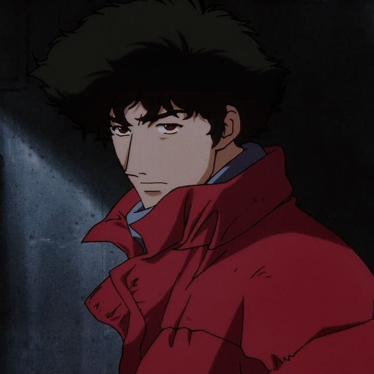
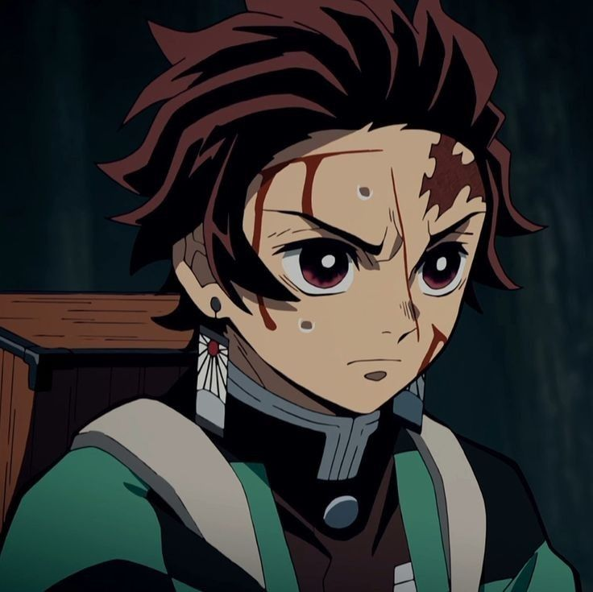
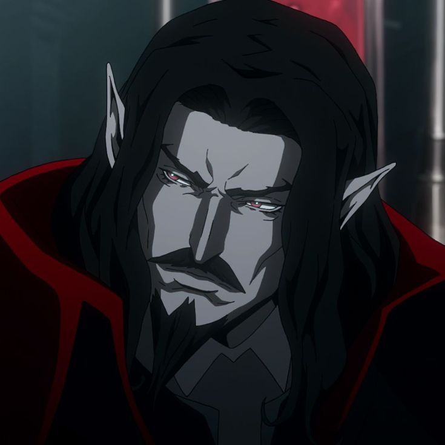
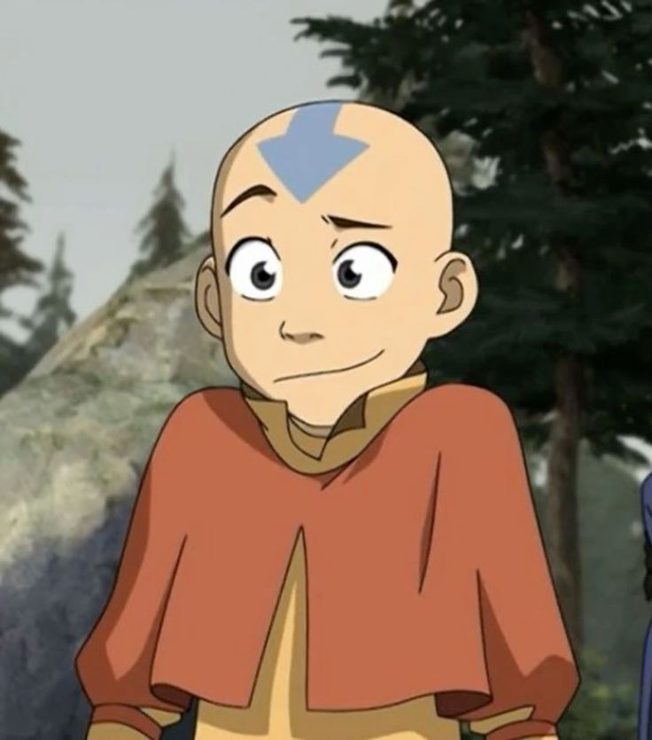
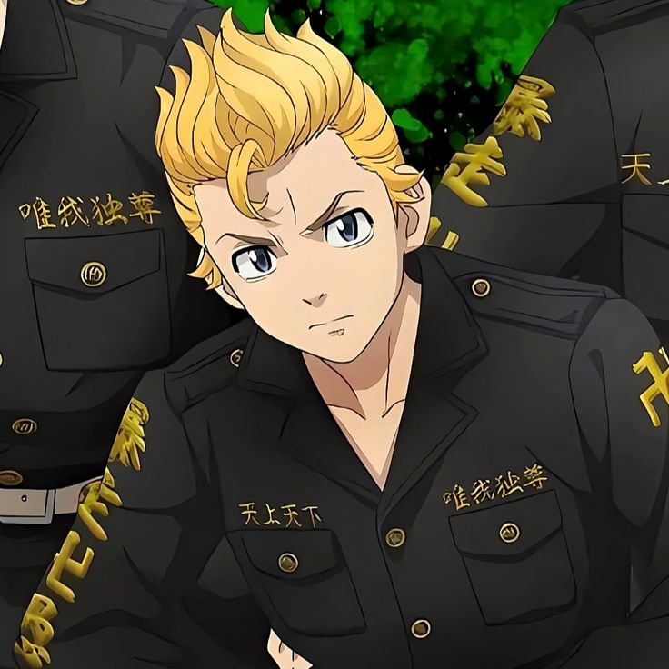

listei alguns dos meus animes(tenho muitas coisas favoritas)
Cowboy Bebop

Cowboy Bebop é um anime de ficção científica que mistura elementos de ação, drama e comédia. A história se passa no futuro e segue as aventuras de Spike Spiegel e Jet Black, dois caçadores de recompensas que viajam a bordo da nave Bebop. Eles são acompanhados por Faye Valentine, uma vigarista, Ed, uma hacker prodígio, e um cachorro inteligente chamado Ein. Juntos, eles enfrentam diversos criminosos e lidam com seus próprios passados turbulentos, enquanto tentam ganhar a vida capturando fugitivos. A série é conhecida por sua trilha sonora marcante e seu estilo visual único, além de explorar temas como solidão, redenção e o peso do passado.
Attack On Titan
Attack on Titan (ou Shingeki no Kyojin) se passa em um mundo onde a humanidade está à beira da extinção devido aos Titãs, gigantescas criaturas humanoides que devoram seres humanos. A história segue Eren Yeager, Mikasa Ackerman e Armin Arlert, jovens que se juntam ao Exército para combater os Titãs após um ataque devastador à sua cidade natal. Conforme a trama avança, eles descobrem segredos chocantes sobre a verdadeira natureza dos Titãs, o governo e a história da humanidade. O anime é conhecido por suas cenas de ação intensas, reviravoltas surpreendentes e exploração de temas como coragem, sacrifício e a luta pela sobrevivência.
Chainsaw Man
Chainsaw Man é um anime de ação e terror que segue a história de Denji, um jovem que luta para sobreviver matando demônios para pagar as dívidas de seu falecido pai. Para isso, ele forma uma parceria com Pochita, um demônio que se transforma em uma serra elétrica quando Denji aperta o nariz. Ao longo da série, Denji se envolve em batalhas intensas com outros demônios, ganha novos aliados e descobre segredos perturbadores sobre o mundo dos demônios e seus próprios poderes. Chainsaw Man é conhecido por sua narrativa sombria, personagens complexos e cenas de ação emocionantes.
Demon Slayer

Demon Slayer (ou Kimetsu no Yaiba) é um anime de ação e fantasia que segue a jornada de Tanjiro Kamado, um jovem que se torna um caçador de demônios após sua família ser massacrada por um demônio, exceto sua irmã Nezuko, que foi transformada em um demônio. Determinado a vingar sua família e encontrar uma cura para Nezuko, Tanjiro se junta aos Caçadores de Demônios e embarca em uma jornada para derrotar os demônios e descobrir segredos sobre sua própria linhagem. O anime é conhecido por sua animação impressionante, combates dinâmicos e personagens cativantes, explorando temas como sacrifício, redenção e determinação.
Castlevania

Castlevania é uma série de anime baseada na famosa franquia de videogames da Konami. A história segue Trevor Belmont, o último membro sobrevivente do clã Belmont, enquanto ele luta contra o vampiro Drácula e seus asseclas que ameaçam devastar a Europa medieval. Com a ajuda de Sypha Belnades, uma maga, e Alucard, o filho mestiço de Drácula, Trevor embarca em uma missão para salvar a humanidade do terror do vampiro. O anime é conhecido por sua animação de alta qualidade, cenas de ação emocionantes e pela exploração de temas como vingança, sacrifício e redenção.
Arcane
Arcane é uma série de animação baseada no universo de "League of Legends", desenvolvida pela Riot Games. A história se passa na cidade de Piltover e na vizinha Zona Cinzenta, onde acompanhamos as vidas de duas jovens prodígios, Vi e Jinx, antes de se tornarem lendárias figuras em Piltover e em Zaun. A série explora suas origens, o crescimento de suas habilidades e os eventos que moldam seu destino. "Arcane" é elogiado por sua animação impressionante, narrativa complexa e desenvolvimento de personagens profundo, oferecendo uma visão mais ampla e madura do universo de "League of Legends".
Avatar a Lenda de Aang

Avatar: A Lenda de Aang é uma série de animação que se passa em um mundo onde certas pessoas podem manipular um dos quatro elementos: água, terra, fogo e ar. A história começa quando Aang, o último Avatar, um ser capaz de dominar todos os quatro elementos, emerge após ficar congelado por 100 anos. Junto com seus novos amigos, Katara e Sokka, Aang embarca em uma jornada para derrotar a Nação do Fogo e restaurar a paz em um mundo em guerra. A série é conhecida por sua narrativa envolvente, personagens carismáticos e profundidade emocional, explorando temas como amizade, crescimento pessoal e o equilíbrio entre o bem e o mal.
Tokyo Revengers

Tokyo Revengers é um anime de ação e drama que segue a história de Takemichi Hanagaki, um jovem desempregado que descobre ter a habilidade de viajar no tempo. Ele retorna ao passado para tentar impedir a morte de sua namorada, Hinata Tachibana, e mudar o curso trágico de eventos que levaram ao surgimento de gangues violentas em Tokyo. Takemichi se vê envolvido com seu antigo grupo de amigos delinquentes e precisa lidar com desafios pessoais e conflitos internos enquanto luta para alterar o futuro e proteger aqueles que ama. A série aborda temas como amizade, redenção e o impacto das escolhas pessoais na vida das pessoas ao seu redor.